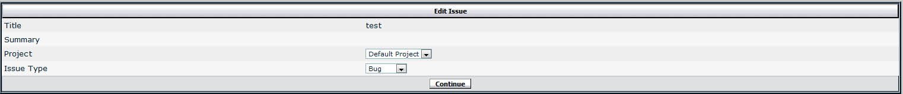

vBulletin
Project Tools
vBulletin Open Source License version 1.0
Copyright (©) 2010 vBulletin Solutions, Inc. All rights reserved.
Everyone is permitted to copy and distribute this license agreement.
The intent of this license is to establish freedom to share and change the software regulated by this license under the open source model.
This copyright license applies to any software containing a notice placed by the copyright holder saying that it may be distributed under the terms of the vBulletin Open Source License version 1.0 (the “Software”). This license (“License”) covers modification and distribution of the Software, use of third-party application programs based on the Software, and development of free software which uses the Software.
Granted Rights
1. You are granted the worldwide, non-exclusive, royalty-free rights set forth in this License provided you agree to and comply with any and all conditions in this License. Whole or partial distribution of the Software, or software items that build upon or enhance the Software, in any form, signifies acceptance of this License.
2. You may copy and distribute the Software in unmodified form provided that the entire package, including but not restricted to, copyright, trademark notices and disclaimers, as released by the initial developer of the Software, is distributed.
3. You may make modifications to the Software and distribute your modifications, in a form that is separate from the Software, such as patches, for example. The following restrictions apply to all modifications:
a. Modifications must not alter or remove any copyright notices in the Software.
b. When modifications to the Software are released under this License, a worldwide, non-exclusive, royalty-free right is granted to the initial developer of the Software to distribute your modification in future versions of the Software, provided such versions remain available under these terms in addition to any other license(s) of the initial developer.
4. You may use the original or modified versions of the Software to build and run application programs legally developed by you or by others.
5. You may develop application programs, reusable components and other software items that build upon or enhance the original or modified versions of the Software. These items, when distributed, are subject to the following requirements:
a. You must ensure that all recipients of these items are also able to receive and use the complete machine-readable source code to the items without any charge beyond the costs of data transfer.
b. You must explicitly license all recipients of your items to use and re-distribute original and modified versions of the items in both machine-executable and source code forms. The recipients must be able to do so free of charge, and they must be able to re-distribute to anyone they choose.
c. If the items are not available to the general public, and the initial developer of the
Software requests a copy of the items, then you must supply one.
This License does not grant permission to use the trade names, trademarks, service marks, logos or product names of the Software developer, except as required for reasonable and customary use in describing the origin of the Software and reproducing the content of the notice.
Limitations of Liability
In no event shall the initial Software developers or copyright holders be liable for any damages whatsoever, including - but not restricted to - lost revenue or profits or other direct, indirect,
special, incidental or consequential damages, even if they have been advised of the possibility of such damages, except to the extent invariable law, if any, provides otherwise..
No Warranty
The Software and this License are provided AS IS with NO WARRANTY OF ANY KIND,
INCLUDING THE WARRANTY OF DESIGN, MERCHANTABILITY AND FITNESS FOR A
PARTICULAR PURPOSE, to the extent permitted by law.
Choice of Law
This License is governed by the laws of the the United States of America and the State of
California. Disputes shall be settled in state and federal courts in the Los Angeles County and the Central District of California, respectively.
The vBulletin Project Tools system is an add-on to vBulletin that integrates project management into an existing vBulletin forum installation. The interface and administration are fully integrated with the forum.
Terminology
It is important that you understand some of the basic terms used by Project Tools.
Project – this is the general organizational unit in Project Tools. Each project should represent a collection of items that need to be completed to allow something to come to fruition. A project can cover anything you wish, from developing a piece of software to building a car.
Issue – the basic unit of a project. An issue is a specific item that needs to be completed. A project would contain many issues. An issue can cover anything you want, though you may want to define your own issue types to make the issue “fit”.
Tag – a tag is a form of meta-data to enable structured searching on data that can’t easily be represented otherwise. You may define any tags you wish. Common uses include creating tags for the topics the issue covers. Alternatively, tags could represent actions that need to be taken for issues to be completed, such as reviews being made.
Issue Type – an issue type is a way of grouping issues within a project. All issues must be assigned to an issue type. An issue type allows use of specific phrases (“Post New Bug”) and specific statuses (“Fixed”) for issues of that type. Additionally, permissions are definable per issue type.
Issue Status – an issue status simply describes the progress of the issue. These are specified per issue type.
Petition – petitions allow users to request that an issue’s status be changed. This is useful to draw attention to an issue with a resolution that may not be correct. A developer may assume a bug is fixed, but it may not fix the issue for a user. This user could submit a petition to change the status back to “Confirmed”.
These terms are discussed in more detail in the appropriate sections.
Warning
The Project Tools require vBulletin 4.0.3 or newer. You will not be able to install them unless you are running this version!
Control Panel Overview
The Project Tools administration is divided into seven sections:
- Project Manager
- Project Permissions
- Issue Type Manager
- Tag Manager
- Update Counters
- Edit Issue
- Attachment Storage Type
More details are provided in each section.
A group of Project Tools options are added in vBulletin Options > vBulletin Options > Project Tools Options as well.
Installation / Upgrading
The Project Tools are quite simple to install or upgrade. The process is the same for each.1
1. Download the latest version of the Project Tools from the Members’ Area. Be sure that you are running vBulletin 4.0.3 or newer!
2. Unzip the file to your hard drive locally.
3. Upload the contents of the upload/ directory within the zip on top of your existing vBulletin directory. This is the directory with forumdisplay.php and many other files in it.
4. Log into your vBulletin forum’s control panel. Go to Plugins & Products > Manage Products > Add/Import Product
5. In the Import the XML file from your server field, enter: ./includes/xml/product-vbprojecttools.xml
Change Allow Overwrite to yes.
6. Click Import.
If all went well, you should see a message saying your install or upgrade was successful! That’s it!
Warning
If you are upgrading, overwrite any files if prompted.
Note
If you are upgrading, overwrite any files if prompted.
Note
There are more detailed instructions on how to unzip and upload files in the Installing vBulletin section. These may be helpful.
Note that there is no config.php configuration file in the Project Tools. You do not need to perform this step.
Project Manager
The project manager allows you to create new projects and manage the settings of existing ones. You can also manage the categories and versions for the projects.
When you first enter this section, you will see the following:
This is a basic overview page. It shows you the list of projects in ascending display order. From here, you may edit or delete a project or manage its categories and versions. You may also add a new project.
A link to the global Project Tools’ options is provided for convenience, though this is available via the vBulletin Options section.
Add/Edit Project
When adding or editing a project, you are presented with numerous options. These options are detailed below.
Title – the title of the project. This is how the project will be identified throughout the Project Tools. You may use HTML if you wish, though it will often be shown with HTML stripped. This is the only field you must fill out.
Summary – this is a one line description of the project. It is shown on the project list page and on the forum list if the project is shown (see below). HTML is allowed.
Description – this is a long description of the project. It will only be shown when viewing this project’s overview page. A fairly large space is dedicated to this, so you can write a fair amount. However, anyone that can see this project will be able to see the description. HTML is allowed.
Display Order – this controls the order in which projects are displayed. Lower numbers are displayed first. A display order of 0 will hide the project from the list, though it will still appear in the forum list (if desired) and be directly accessible if the URL is known.
Required Fields – the fields shown here are usually optional, but you may choose to make one or more of them required. This will prevent users from submitting issues with Unknown selected for these fields. A title and issue description must always be submitted
Display After Forums – this setting allows you to show project information in the main forum list. See below for more information on this setting
Title in Forum List – if you choose to use the Display After Forums option, this option allows you to override the project title and show something else in the forum list. This is helpful as the project title may not be descriptive enough without the context of other projects around it. If you leave this blank, the default title will be used, but preceded by the word Project.
Base Permissions off of Existing Project – this option allows you to copy the custom permissions from an existing project to this one. It is only presented if you are creating a new project. If you do not choose to use this option, you will need to create the permissions manually later.
Available Issue Types – you may choose which issue types are applicable to this project. A drop down for each issue type is shown, listing all issue statuses for that type. To use an issue type with this project, simply select one of those statuses. This status will be used as the default issue status; issues created by users that don’t have permission to change the status will always start in this status.
If you choose not to use a type, it will not be shown with a project and its permissions will not apply.
Project Categories
You may also specify as many categories as you wish for a project. These apply to all issues in the project, regardless of issue type. Categories simply create an additional organizational unit. They are especially useful if you have people with specific areas of expertise. If you do not create any categories for a project, users will not have the option of specifying a category, although Unknown will still be shown when viewing an issue.
When you click the category link, you will be shown a list of categories for the project:
When adding or editing a category you will see the following options:
Title – the title of the category. Use of HTML in the title is not recommended.
Display Order – sorting order. There is no way to completely hide a category without removing it.
Project Versions
A project may have any number of versions (or revisions) associated with it. This is useful for projects that have multiple iterations like software.
Issues may have two versions associated with them: applicable and addressed versions. The exact terminology will vary between issue types. An applicable version will be used to list the version the issue was found in or applies to. Any user that can create an issue can set this value. The addressed version refers to when the issue was fixed or completed. Only users that have permission to change the status of an issue may change the addressed version.
In addition to Unknown, the addressed version may also be set to the special value, Next Release. This allows you to tag what version issues are addressed in before that version is explicitly created. When you create this version, you may automatically update all issues that are addressed in the “Next Release” to the version you are creating.
Versions vs Version Groups
Versions should represent individual releases. Version groups allow you to collect a number of versions together. There are certain scenarios where all versions in a group can be searched for, without selecting individual releases. Using vBulletin as an example, “3.6.x” would be a version group, and “3.6.0” through “3.6.7” would be included as individual versions.
A version may only be created once a version group is created.
Version List
This list shows you the created version groups and individual versions. You may add a new group and version from here. To create a new version, click the “Add Version” link under a specific group.
Add/Edit Version
Title - title for the version. HTML is not recommended.
Display Order - sort order for the version. Higher numbers will be shown first!
Denote as next version? - this will only be shown when adding a version. If you select this, any issues which are denoted as addressed in the Next Release will be updated to be addressed in this version.
Display Order - sort order for the version. Higher numbers will be shown first!
Denote as next version? - this will only be shown when adding a version. If you select this, any issues which are denoted as addressed in the Next Release will be updated to be addressed in this version
Note
Version display orders work in the opposite order from the display order options in other areas of vBulletin and the Project Tools! Higher numbers will be displayed first.
This allows newer versions to be displayed earlier in the list without renumbering older versions to accommodate this.
Note
Higher display orders are shown first here.
Project Permissions
The Project Tools include an extensive permission system that ties into vBulletin’s existing usergroup system. Permissions are definable for all usergroups on a per project and per issue type basis.
The following standard usergroup permission concepts apply to the Project Tools:
Inheritance
Project Tools permissions are definable at a global and per-project level. If you do not define any permissions for a specific project, the global permissions will apply.
Multiple Group Membership
Like in the usergroup system, if a user belongs to multiple groups, the most permissive value for a specific permission will be used. That is, a yes will always override a no. This is a useful way to apply specific project permissions to certain users in a group.
Permissions Viewer
When viewing the project permission page, you will see a table like this:
Each usergroup in your forum is listed, along with each issue type you have defined. The group’s name will be struck-through if access to the project tools is disabled. Any permissions you specify for the group will not apply. A check mark will be shown below each issue type the group has the “Can View” permission for. The Edit link will be highlighted if you have specified a custom set of permissions for the group.
By default, the global permissions will be shown. To view the actual permissions for a specific project, select the project from the table at the bottom of the page:
Permission Editing
When you go to edit permissions for a group, you will be presented with a number of options. If you are editing the global permissions for a group, you will be presented with a few additional
options at the top of the page:
Can View Project Tools - this is a global switch. If you set this to no, this group will not be able to view the project tools regardless of permission settings.
Can Create Report - this is a master switch to control whether users in this group can create reports (saved searches). If you set this to no, they will not be able to create any reports. If you set this to yes, they will be able to create private reports, reports which are only viewable by the creator. Public report permissions are controlled by the next setting.
Can Create Public Report - provided that the Can Create Report setting is set to yes, this option controls whether users in this group can create reports that are viewable by any users that can search. Public reports may also be used for RSS feeds if permissions allow for it.
Can Delete Own Public Reports - if a user can create a public report, can he or she also delete it? This only applies to their own reports.
Can Delete Others’ Public Reports - this setting controls whether users in this group can delete others’ public reports. Private reports are only deletable by the creator.
Can Create Custom Tags - if you set this to yes, users in this group will be able to define their own tags when editing an issue (provided they can modify the tags at all). You may wish to disable this for all groups and simply manage the tags via the admin control panel.
Below these options, you will see all the permissions that can be set. To quickly manage a group of permissions for a type, use the check box next to the type’s name. This will select all or none of the permissions in a group. To quickly set a permission for all issue types, double-click on the permission name.
Can View Issues - the global viewing switch. If this is set to no, access to that type will be denied completely. Unlike vBulletin, if you set this no globally, it may be overridden by a project-specific permission!
Can View Others’ Issues - determines whether issues posted by others can be viewed. If this is set to no but Can View Issues is set to yes, users in this group will only be able to view issues posted by them.
Can View Own Private Issues/Notes - controls whether they can see issues or notes posted by them that are private. Note that if an administrator makes this user’s note private, he or she will still be able to see the note and perhaps edit it.
Can Search - controls whether users in this group can search for issues of the specified type. Only issues or notes that they see will be searched.
Can Vote on Issues - determines whether users can vote on issues. Registered users may only vote on an issue once. If you allow unregistered users to vote, each IP address can only vote once.
Can be Assigned - controls whether users in this group will can be assigned to an issue.
Assignment allows for easy searching and causes some different permissions to be applied (see below).
Can Manage Issues/Notes - if this is set to yes, users will be able to see soft-deleted issues and notes and view IP addresses attached to notes.
Can View Others’ Private Issues/Notes - controls whether users in this group can view private issues and notes that have been posted by other users.
Can Edit Assignments - master switch to control whether users can modify the users that are assigned to an issue.
Can Edit Others’ Assignments - controls whether users in this group can edit the assignments of other users. If this is set to no but Can Edit Assignments is set to yes, then users in this group will only be able to edit their own assignment.
Can Edit Issue Statuses when Assigned - controls whether users in this group can edit the status of an issue when assigned. This will also allow them to changed the “addressed version”.
Can Edit Issue Statuses when Unassigned - controls whether users in this group can edit the status of an issue when unassigned. This will also allow them to changed the “addressed version”.
Can Edit Issue Tags when Assigned - determines if users can modify the tags of an issue when they are assigned to it.
Can Edit Issue Tags when Unassigned - determines if users can modify the tags of an issue when they are not assigned to it.
Can Post New Issues - controls whether users in this group can post new issues at all. The exact fields that are editable are controlled by other permissions implicitly. Users will always have access to priority, category, and applicable version.
Can Reply to Issues - the master reply control. If this is set to no, users will not be able to reply to issues.
Can Reply to Others’ Issues - determines whether users can reply to issues posted by other users. If you set this to no but Can Reply to Issues to yes, users will only be able to respond to their own issues.
Can Petition for Status Changes - controls whether users can submit status change petitions when replying. Users must have reply permissions before this can apply.
Can Make Issues/Notes Private During Creation - determines whether users can make an issue or note private when it is being created. This is useful to allow unprivileged users to post data they think is sensitive.
Can Edit Issue Information - controls whether users can edit the basic information of an issue (other than the text) after it has been posted. This includes things like priority, category, and applicable version. The text of an issue is controlled by the Can Edit Notes permission.
Can Edit Others’ Issue Information - controls whether users can edit issues posted by other users. If this is no but Can Edit Issue Information is yes, users will only be able to edit their own issues.
Can Edit Notes - if this is enabled, users will be able to edit notes after they have been posted. This also includes the initial text of an issue.
Can Edit Others’ Notes - controls whether users can edit notes posted by other users. If this is no but Can Edit Notes is yes, users will only be able to edit their own notes.
Can Edit Private Setting After Creation - determines whether users can change the private setting on an issue or note after is has been created. Care must be taken with this permission, as it will allow a user to take a note that has been marked private by another user and make it public again. The appropriate edit permission (issue or note) must be set before this option is applicable.
Can Delete Issues - determines whether users in this group can delete issues. This does not differentiate between soft- and hard-deleting.
Can Delete Others’ Issues - determines whether users in this group can delete issues posted by other users. This does not differentiate between soft- and hard-deleting. If this is set to no but Can Delete Issues is set to yes, users will only be able to delete issues posted by them.
Can Delete Notes - determines whether users in this group can delete notes. This does not differentiate between soft- and hard-deleting.
Can Delete Others’ Notes - determines whether users in this group can delete notes posted by other users. This does not differentiate between soft- and hard-deleting. If this is set to no but Can Delete Notes is set to yes, users will only be able to delete notes posted by them.
Can View Attachments - determines whether users in this group can download attachments.
Can Upload Attachments - determines whether users in this group can upload attachments. The exact file types and maximum file size is controlled in the vBulletin Options section.
Can Edit Attachments - controls whether users can edit attachments after they have been uploaded. This includes the ability to delete them and mark them as obsolete.
Can Edit Others’ Attachments - controls whether users can edit attachments uploaded by other users after they have been uploaded. This includes the ability to delete them and mark them as obsolete. If you set this to no and Can Edit Attachments to yes, users will only be able to edit attachment they have uploaded.
Issue Type Manager
The issue type manager allows you to create and edit issue types along with the associated issue statuses. Issue types allow you to change numerous wordings associated with issues (such as how the “Post New” link appears or what to call the “Addressed Version”). Additionally, each issue type may have its own set of permissions for each usergroup and project. This makes them a very flexible organization system.
When you enter the manager, you will see a page like this:
You can edit the display order of each status here. To edit the display order of the types, you must edit each manually using the appropriate edit link.
Statuses can only be created after the appropriate type is created. Statuses can not be moved between types.
Add/Edit Issue Type
When adding or editing an issue type, you will be presented with a range of settings.
Note that if you are creating a new issue type, it will not be associated with any projects until you create one or more status and manually select the starting status for each project!
Issue Type Key - this is simply a unique identifier for the type that is used internally. It will not be exposed anywhere directly. It may only include letters, numbers, and underscores.
Display Order - sort order for the issue types. Lower numbers will be displayed first.
Filename for Icon - you may enter the path to an image to use as an icon for this type. This path should be relative to your status icon directory, which defaults to images/statusicon. Three issue type icons are included with the Project Tools: pt_type_bug.png, pt_type_feature.png, and pt_type_task.png.
Base Permissions off of Existing Type - you can choose to copy the permissions from an existing issue type to ease setup. This option will only be available when creating an issue type. If you do not select a type, no users will be able to access this type until you manually setup its permissions.
You can also select the wording for a number of different areas, based on the issue type.
Examples are provided for the “Bug” issue type.
Singular Form - issue type name in singular form.
Example: Bug.
Plural Form - issue type name in plural form.
Example: Bugs.
Vote Question - question to ask users who are voting on an issue of this type.
Example: Can you reproduce this bug?
Positive Vote Count - description for people who voted “yes”.
Example: Users able to reproduce bug.
Negative Vote Count - description for people who voted “no”.
Example: Users unable to reproduce bug.
Applicable Version - description for the version that this issue applies to. You can really make this mean anything you want, but be aware that issue submitters will always be able to choose a value.
Example: Affected Version.
Addressed Version - description of the version this issue is addressed in. Again, you can make this anything you want, but only users with permission to change the status of an issue will be able to set this.
Example: Fixed Version.
Post New Issue - text for the issue type-specific version of the “Post New Issue” link.
Example: Post New Bug.
Add/Edit Issue Status
Once you have created an issue type, you need to fill it with statuses. To do this, click the “Add Status” link next to the type you want the status to be part of. You will be presented with a form like this:
Title - the title of the status you want to add. HTML is not recommended.
Issue Type - this simply tells you the issue type the status is going to be in. Statuses cannot be moved to different types.
Display Order - sorting order for this status. Lower numbers are displayed first.
Can Create Petitions from this Status? - determines whether users can create a petition for an issue when it is in this status. Common cases where you’d want to prevent users from creating petitions is when the issue hasn’t been looked at yet (such as in the starting state) or when the decision is final.
Tag Manager
Tags are a form of meta-data that enables structured searching on data that can’t easily be represented otherwise. You may define any tags you wish. Common tag uses include:
- Topic or keyword
- Actions required (for example, “requires review”)
Upon entering the tag manager, you will see a list of tags:
To delete one or more tags, simply tick the appropriate checkboxes and click delete.
To add a tag, use the form at the bottom of the page:
Tags may contain any text you wish, though they should be less than 50 characters long. Depending on permission settings, tags may be created via the front-end dynamically.
Update Counters
The update counters section lets you ensure that counters such as number of replies in an issue or the number of issues in a project are correct. This is a maintenance section. You do not need to run either of the options here unless you suspect that the counters are incorrect. They should remain correct during day-to-day use.
There are two counters that can be rebuilt:
Rebuild Issue Counters - this will rebuild the reply, attachment, and petition counters in an issue. In addition, last post times and users will be checked.
Rebuild Project Counters - this will rebuild the total issue counters and last activity times for each issue type in a project. If you think you need to run this, it’s generally recommended that you run Rebuild Issue Counters first to ensure that the issue data is correct.
Edit Issue
The project and issue type settings for an issue are not editable via the front-end of the Project Tools at this time, due to complex permission interactions. This system allows you to arbitrarily change those values without regard for permission concerns.
This is a several step process.
Here you need to enter the ID for the issue you wish to edit. To find the ID, view the issue in question and look at the URL. You should see something like this:
project.php?issueid=12345
The 12345 is the issue’s ID.
Once you have entered the issue ID, you can confirm that you have selected the correct issue on this page. If that is correct, you should select the new project and/or issue type.
You may also have to select a new category, version, or status as the existing settings may not apply to the new project or type. This is the last step, so once you continue the changes will be saved.

Attachment Storage Type
You may choose to store your Project Tools’ attachments in the database or file system, independent of what you have chosen to do with vBulletin’s attachments. By default, they are stored in the database.
The process for moving the Project Tools’ attachments from the database to the file system (or vice versa) is identical to vBulletin’s. See this manual entry for more details.
Warning
If you are intending on putting the Project Tools’ attachments in the file system, they must go into a different directory than vBulletin’s attachments!